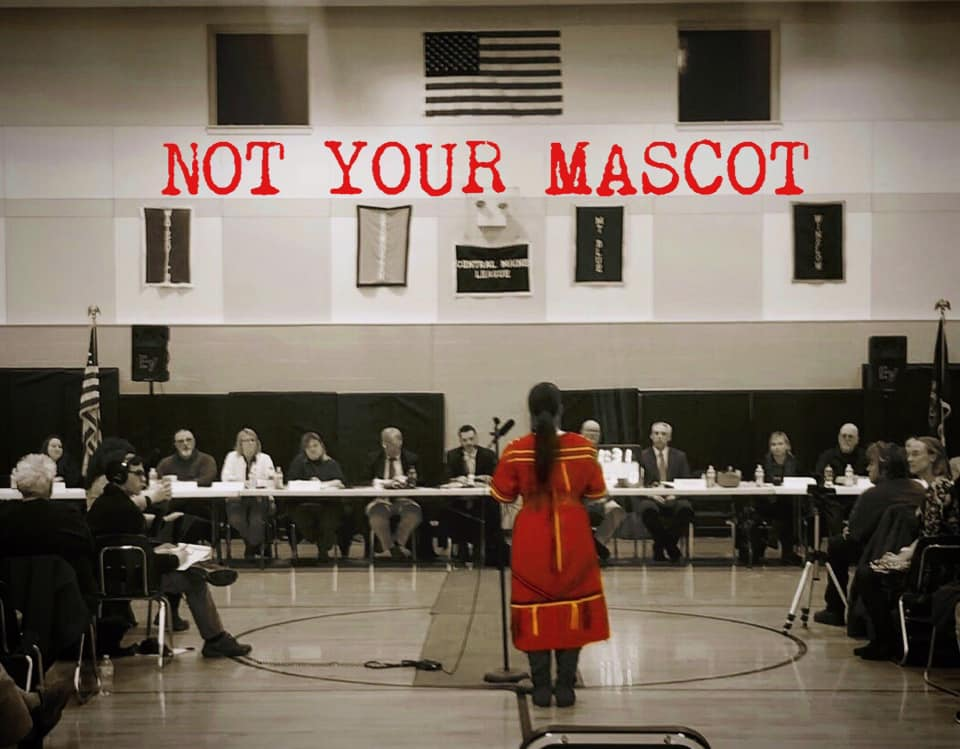

2020-02-24 08:00

Like so much in America that is touched by race, a reckoning with the Dartmouth High School mascot has been simmering for years. Maine, Oregon and Washington state have all banned Native American school mascots. And here in Massachusetts – even after Pentucket, Groveland, Merrimac, West Newbury, Athol, Barnstable, Nashoba, Hanover, Winchester, Grafton, Brookfield, Taconic High, Braintree, Walpole, and Pittsfield abandoned theirs – many in the Town of Dartmouth insist on defending their “Indian” mascot as if it were a besieged Confederate monument in the Heart of Dixie.
Massachusetts legislation to ban Native American mascots brought the local issue to a head in 2019. That was the year the School Committee voted 3-2 to reject a public discussion of the mascot. With George Floyd’s murder, a short-lived national moment prompted the School Committee to create a “Diversity Committee,” in which the mascot issue was conveniently buried. This subcommittee, though it tried hard to address the issue, never really had the full support of the larger School Committee and the chair became the recipient of numerous ad hominem attacks by mascot defenders.
In 2021 Chairwoman Cheryl Andrews-Maltais of the Wampanoag Tribe of Gay Head (Aquinnah) registered her formal notice to both the Town of Dartmouth and its School Committee that she was displeased with the “lack of consultation and coordination regarding the name and imagery” used by the school system and that she supported the mascot. A Dartmouth High School graduate herself, Chairwomain Andrews-Maltais’ sentiments were echoed by several other Aquinnah alumnae: her brother Clyde Andrews (who created the 1974 version of the “Indian”); her sister Naomi Carney; her nephew Sean Carney; Massachusetts Tea Party activist and former school committee member Christopher Pereira (who runs Friends of Dartmouth Memorial Stadium Inc. and the Dartmouth Indians Football Alumni Club); and twice unsuccessful anti-immigrant state senate challenger Jacob Ventura.
This group has the full and exclusive attention of both the School and Select Committees. Everyone seems content to let the Chairwoman speak for all Native Americans.
But the Wampanoag Nation is not the only indigenous nation in Massachusetts and it includes numerous tribes, not just the Aquinnah. Even voices within the Wampanoag Tribe of Gay Head Aquinnah are anything but monolithic. Kisha James, a member of the Aquinnah who supports statewide legislation to ban mascots, told the Boston Globe last Fall that the word “mascot is just another word for pet.” She added, “It solidifies this idea that we’re not people. We’re costumes, we’re characters forever stuck in the past.”
Brad Lopes, Program Director of the Aquinnah Cultural Center, created a change.org petition disputing Chairwoman Andrews-Maltais’ efforts to promote the Dartmouth mascot “as the official position of our Nation.” In a separate letter to the Chairwoman he wrote, “I worked alongside members of the Penobscot and Passamaquoddy Nations here in Maine in an effort to ban mascots, with that bill passing, and would also think it would be wise to hear from them why. I do not feel this would provide any benefit to our tribal nation, and may in fact just create another symbol that Thomas King would describe as a ‘dead Indian’ for colonial narratives to use as they see fit. We are Wôpanâak after all, not ‘Indians’ or objects.”
Chairwoman Andrews-Maltais suggested in her letter to the Town and Schools that the Aquinnah enter into an agreement “much like the historic Seminole Tribe of Florida and Florida State University agreement of 2005.” In that agreement Florida State created scholarships for some Florida Seminole tribal members.
But Seminole history is complicated. Oklahoma Seminoles remember their ancestors being forced to march the bitter Trail of Tears, and not all were happy with the FSU accord. David Narcomey, a member of the Seminole Nation of Oklahoma who was part of the 2005 NCAA review that banned many Native American mascots, referred to Florida State’s use of Chief Osceola as a “minstrel show.” Here in the SouthCoast, members of other indigenous nations, other Wampanoag tribes, and other members of the Aquinnah have similarly expressed their frustration with Chairwoman Andrews-Maltais for speaking in their name.
Nevertheless, the School and Select Committees have chosen to hear what they want to hear – and who they want to hear it from.
So at the January 24th meeting this year committee member Chris Oliver asked the Committee to “reaffirm” the Indian and to begin discussions with [only] the Aquinnah – discussions he admitted that had long been in “limbo.” Committee member John Nunes went a step further, demanding that the whole issue be “put to bed” with an immediate vote, right then, right there. Nunes argued that “if we need to have discussions with the Wampanoag tribe [sic]” he was good with that. The Committee member revealed a decided lack of enthusiasm for consulting with even the Aquinnah. Level-headed members of the Committee urged that other, unheard, indigenous voices be respected and consulted.
Many of those ignored in Dartmouth were nevertheless heard at state Senate hearings on legislation to ban the use of Native American mascots and through letters and statements published by many local tribes and Native American groups. They include:
Despite an impressive number of towns that have done the right thing and retired their nicknames and logos, about 20 Massachusetts school districts still choose to ignore Native voices and a large body of research shows how harmful their use is to both Native and non-native children.
It remains to be seen if any indigenous views will be honestly considered on March 8th at a special hearing for Native Americans on the mascot – or in time for a town referendum on the mascot on April 5th that the town’s Select Board decided to drop on the ballot at the last minute. The referendum vote is barely three weeks after the town’s first, last, and only community hearing on the issue on March 22nd.
Only between 11-15% of the 91% white residents of Dartmouth historically cast votes in the town election. When a voter walks into the booth and stares at the reverse side of a ballot, they will probably know little about what indigenous people think of mascots and will have had little or no time to digest any Native American testimony. They will also have been amply influenced by constant dog-whistling about “woke” “aristocrats,” “elites,” “outsiders” and “cancel” culture.
But people don’t just wake up one morning and decide to be arbitrarily “PC” or “woke.” Human dignity involves real issues, real moral values, and real people. The NAACP, whose members are hardly “aristocrats,” includes people of all colors and our local branch includes members of the Wampanoag nation. We have consistently opposed Native American mascots since at least 1999. We’ve said it again and again and again – and we’ll say it once more:
Native American mascots should not be a matter for a plebiscite. Human dignity is a moral issue.
We took some heat for remarking previously that if this were 1965 and not 2022, some of the “Dartmouth defenders” would be railing against “woke” white allies of the Civil Rights movement like Abraham Joshua Heschel, who marched to Montgomery, Alabama with Martin Luther King. This is the same Abraham Heschel, a respected German rabbi, who had to flee Nazi Germany.
It doesn’t take a genius to guess what Heschel would have thought of letting an ethnic majority take a vote on what rights or what level of tolerance a minority deserves.
As America changes, a reckoning with real history and real respect for every member of society is needed more desperately than ever. But great swaths of White America are pushing back with book and curriculum bans, and there is considerable whining from those who no longer feel free to practice their racial insensitivity at will.
Dartmouth College created not only the big “D” letter and the “Big Green” nickname but also the Indian logo that is virtually identical to the one Dartmouth High School uses today. But in 1974 – almost 50 years ago! – Dartmouth College actually honored Native Americans by agreeing to a 1971 student petition and retired a stereotype that, as the students described it, “is a mythical creation of a non-Indian culture and in no manner reflects the basic philosophies of Native American People.”
If the Town of Dartmouth can “borrow” every other sports symbol from Dartmouth College, why not also adopt a principled, ethical decision to retire their Indian?
Today the whole story of the “Indian” mascot at Dartmouth College has become a teachable moment. In 2020 the college offered History 08.07: The Indian Symbol at Dartmouth: A Story of Voices and Silence. Likewise, Dartmouth Schools could incorporate the town’s struggle with a tough issue into their own History or Civics curriculum.
Supporters may regard the Dartmouth mascot as a trivial issue foisted upon them by “woke” “outsiders,” but the stakes for the Town and the Schools are much higher. According to state data Dartmouth has 443 teachers and 436 of them are white. In a town that’s 91% white and where 98.4% of the teachers are white, how can Dartmouth ever attract BIPOC teachers and staff or make BIPOC students feel like they really belong?
Calls for retiring the mascot, which to some appear as nothing more than an arbitrary assault on a beloved town symbol, have much in common with ultra-conservative efforts to purge school curriculum that reckons with America’s racist history.
“Critical Race Theory,” a post-graduate research methodology that has nothing to do with teaching history in public schools, has become the latest Trumpian bogeyman in dozens of states. The many Constitutionally-questionable initiatives and enacted laws to limit speech, control thought, and let history be written by politicians of a certain sort, are designed to result in the Disneyficaton of American history and the whitewashing of America’s crimes against indigenous and enslaved people.
This is what can be found in the deeper waters of the mascot debate.
Let’s give Kisha James the final word. “It’s like settlers are hearing ‘no’ for the first time and they don’t like it. […] Getting rid of mascots and acknowledging racism humanizes us and a lot of people aren’t comfortable with that. Because if you do, you also have to acknowledge the other wrongdoings, like genocide.”